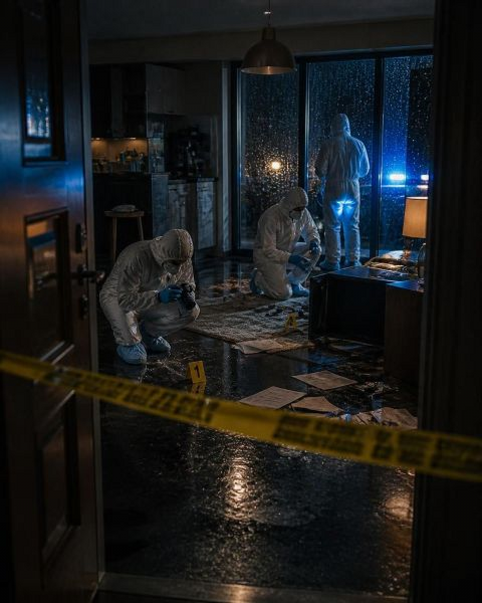
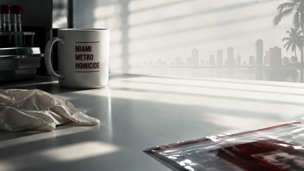

Dexter Morgan analyzing a blood spatter pattern at a crime scene.
Dexter preparing his kill room with plastic sheeting.

Dexter and Debra Morgan at the Miami Metro Police Department.
A close-up of Dexter's signature glass slide collection.
Dexter working undercover as a forensic technician.
A tense standoff between Dexter and one of his targets.

Dexter reflecting on his father's code late at night.
Miami's skyline at dusk, a recurring backdrop in the series.
Dexter's boat, the "Slice of Life," docked at the marina.